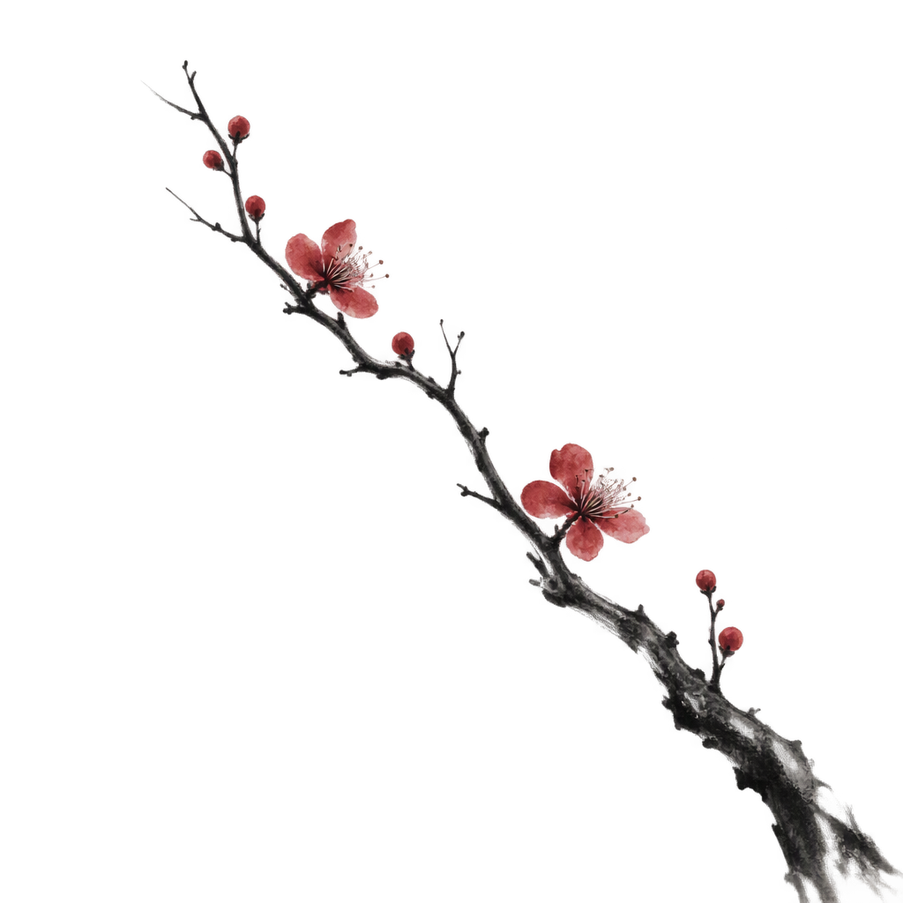
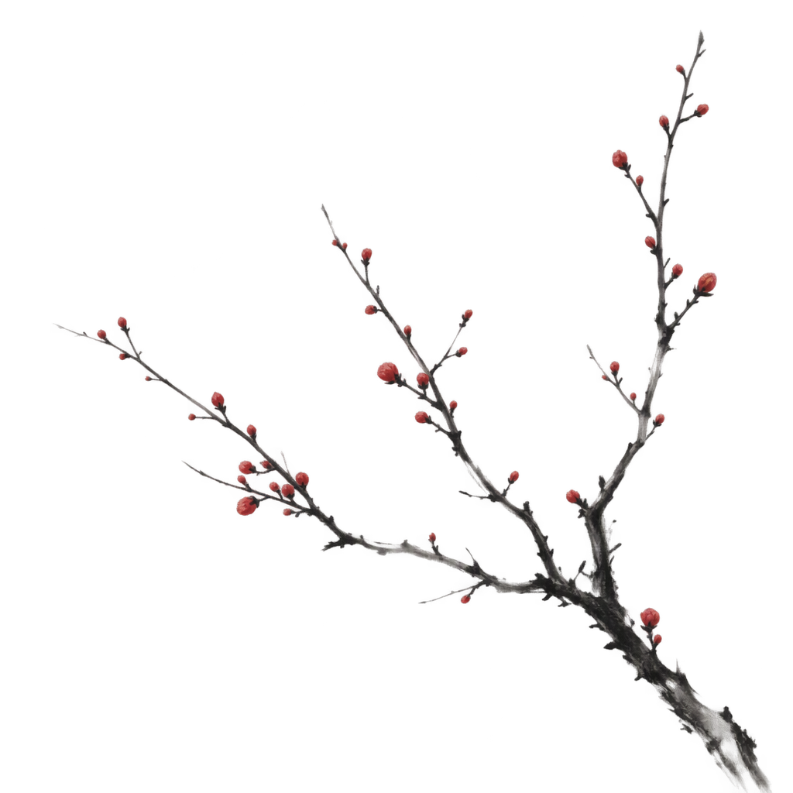
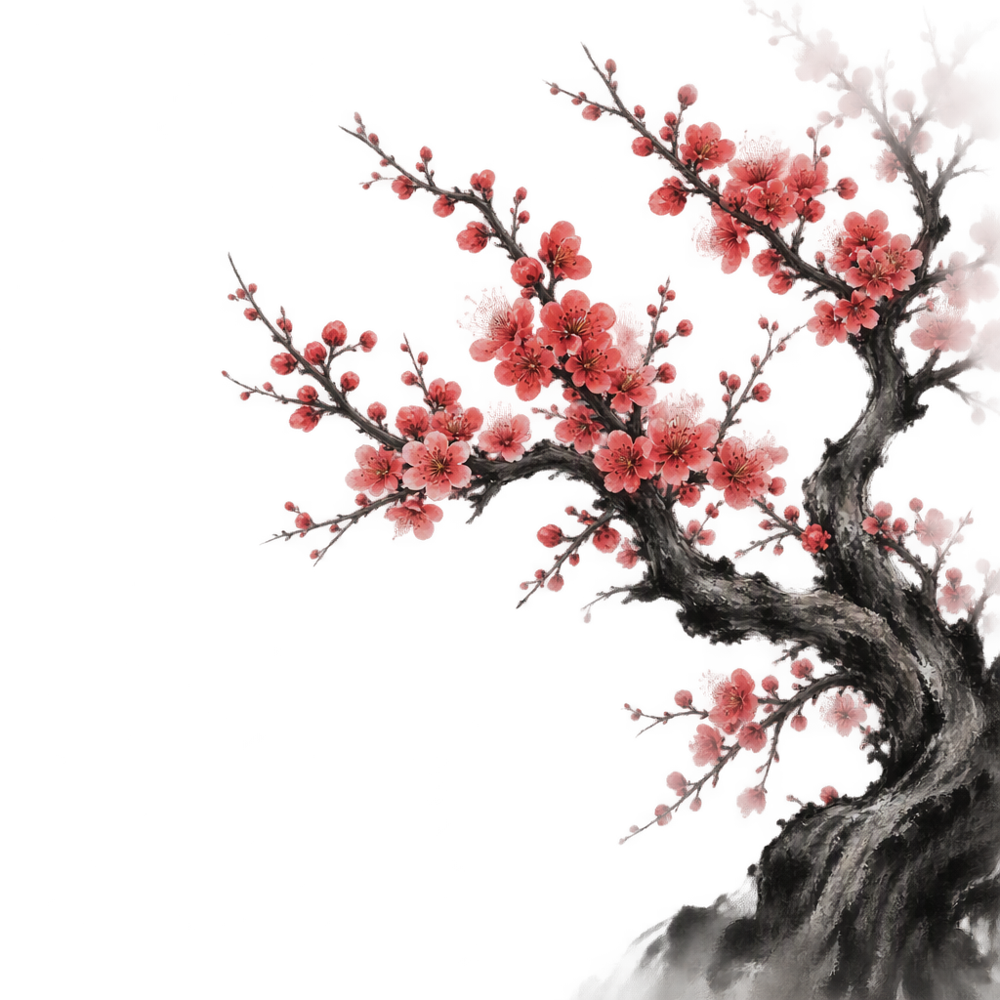

龙 世界 · 结构
连续盘旋 · 聚散成势 · 灰墨偏浓
同源于行气引擎的墨、笔、印、梅。原则不变：笔墨不作贴纸，每一处出现都要有自己存在的理由；reduced-motion 下降级为静止成迹。
上一版被否的根因是「文字一块一块浮出」。这次反过来：一笔行气自左向右先行（灰墨、低压、如远山脊线），宣言文字不移动、不缩放，只是随笔锋所至渐次着墨——墨到了，字才显；笔停之后，全体静止驻留，再无循环。阅读体验上它只在首屏出现一次，且对比度刻意压低。
两种用法，都不动导航。题字：页内标题（论点页的论点题眼、各页 H1、空状态主字）进入视口时，墨点先在纸上泅开，字由浓渐显——字是被墨「浸」出来的，不是跳出来的；导航栏保持纯文字，寻路要安静。状态翻转：命题从「待证」到「已证」的这一刻，用一次着墨加一枚落章表达，比打勾庄重。
手卷上钤章即「作者在此」。状态签收成印章：已验证 / 观察中 / 已失效 / 待证；卷宗每季检毕可盖一枚「检」字章。边缘用湍流滤镜做出钤压的轻微不齐，印泥色不匀。
TC 溢价与 LME 库存的背离已连续四周走阔……
ON RRP 余额见底后的边际变化值得持续追踪……
该命题的证据链已被证伪，保留原文备查……
古人读卷的圈点挪进日志正文：关键句被朱笔圈过（入视口时描一圈），句下或句末着一点；悬停句旁浮出淡墨批注。朱砂只用于「真的被圈过」的句子——它是研究动作的痕迹，不是装饰色。
这一周的消化集中在黄金上。COMEX 库存的回升速度已经慢于持仓的增长， 裂口第一次以周为单位走阔。 我们仍然不预测路径，只记录结构：央行购金的季度节奏没有放慢， 边际速度才是本轮的定价锚。 旧命题里关于铜的两条证据维持有效，其余继续搁置。
不全站替换——用力过猛。核心是一条平衡律：笔迹多的地方，墨迹收一点；笔迹少的地方，墨可以多画一点。分隔只有两式：章节之间一划浓墨短横（入纸收笔皆藏锋），小节之间一痕淡墨长线（行笔即走、不收锋）。用不用、用哪式，看这一页已经有多少笔墨。
龙行气盘完整页，分隔再重就打架；阶段之间靠留白呼吸。
虎的顿挫已在阶段节奏里，小节之间只留一痕淡墨。
卷宗手卷已有行气鹤、印章、落款，分隔线退到最轻。
全站笔墨最素的一页，论点题眼下可落一划浓墨短横——整页只有这一笔重的。
每篇日志、每季卷宗的末尾，按手卷格式落款：淡墨短笔一行 + 干支日期 + 一枚小印。TradingLabb 以作者身份为自己的研究题跋——这个站本来就是一幅不断续写的长卷。
……以上即本周的全部消化。无新增命题，两处旧命题各补一条证据。市场照例没有义务配合任何人， 我们也没有义务配合市场。各记各的账，各修各的心。
取法水墨红梅：焦墨写干，朱砂点春。梅的繁茂即仓位的心境——阴含苞、平疏放、阳盛放，梅花数量跟着多空状态走，不喧宾，只在冬意的场景露面。


阴 · 含苞空仓 · 无一朵盛放
阳 · 盛放多方 · 繁花压枝无信号、无数据、等待期——寒冬里的一枝，比任何插画都贴切。
苦寒出香。被证伪的命题配一朵梅，是研究者的自我落款。
一年只出现一次。稀缺反而成章。
与鹤同页：「梅妻鹤子」，梅两三朵落在卷宗题签处。
持仓为零也是一种持仓。市场冬眠，梅不冬眠。
背景行气按页面气质分配，只做纸缘一笔，不抢占内容：龙给结构关系（世界），虎给节奏纪律（周期），鹤给留白观察（日志与首页）。灰墨护阅读，落纸即驻留。